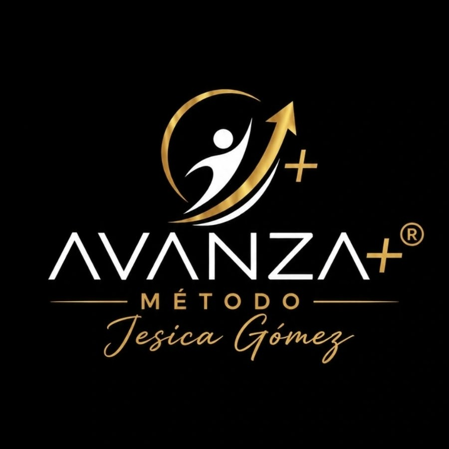

Físico
Propuestas de movimiento adaptadas a cada contexto de acompañamiento.

AVANZA+MÉTODO JESICA GÓMEZ®Conocé el Método Jesica Gómez® y explorá propuestas para trabajar los pilares físico, cognitivo y social.
Estas propuestas muestran cómo se organizaría la oferta. Temarios, formatos y precios se confirman antes de publicar.
Cursos, talleres y materiales en un mismo recorrido.
Explorá cómo se verían los perfiles de profesionales que atienden a domicilio, con profesión y zona de atención. Los perfiles de esta demo son ejemplos y todavía no representan personas disponibles.
El trabajo con personas mayores integra movimiento, estimulación cognitiva y vínculo social. AVANZA+ reúne recursos para planificar actividades con sentido.
Propuestas de movimiento adaptadas a cada contexto de acompañamiento.
Ideas para estimular la memoria, la atención y otras funciones en la vida cotidiana.
Actividades que invitan a conversar, compartir y participar.
Ideas para llevar a la práctica, no solo para leer.
La propuesta suma una comunidad y acompañamiento para quienes adquieren formación. Acá también se anunciarán los próximos talleres y capacitaciones, con fecha y modalidad cuando estén confirmadas.
Este espacio espera experiencias reales de quienes hayan cursado o usado los materiales. No publicamos reseñas inventadas.
Compartir mi experiencia ↗Formación, materiales y comunidad vinculados al trabajo con personas mayores, además de un futuro directorio para familias.
En la versión final, después del pago se habilitará el acceso al contenido digital sin esperar una respuesta manual. La demo muestra el recorrido, pero todavía no procesa pagos ni entrega archivos.
Se mostrarán cuando estén confirmadas las fechas, la modalidad y el programa.
No. Los perfiles actuales son ejemplos para evaluar el buscador; se reemplazarán por profesionales reales antes de publicar esa función.